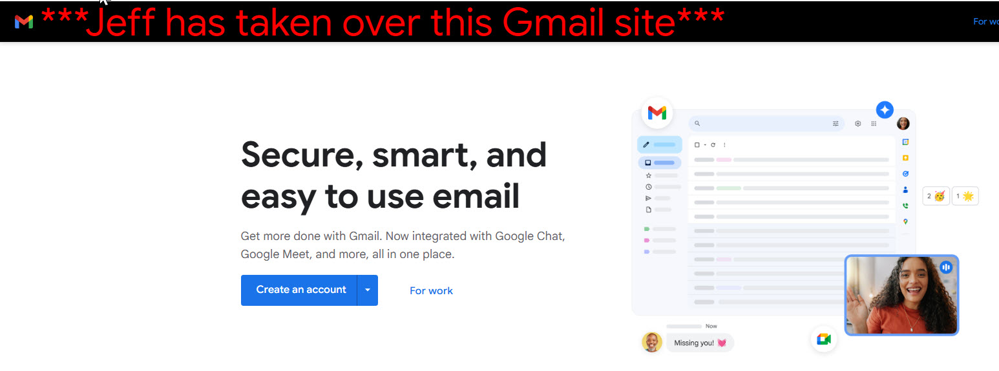

My Dev Tools Vandalism: Gmail Logo
I used the dev tool to modify the Gmail website logo. I edited the word "Gmail" in the header to change its appearance. These edits only appeared locally on my computer and did not affect the actual website.

What I "Vandalized"
Describe the changes you made to the website using the browser's developer tools. Some potential questions to consider:
- What text did you edit?
- I edited the text "Gmail" in the logo header and replaced it with "***Jeff has taken over this Gmail site***"
- What CSS properties did you modify?
- Changed font size to 60px.
- Changed color of font to red.
- Changed header background to black.
- What made your edits interesting or amusing?
- I thought it was funny to pretend I hacked Gmail.
- Did you understand why some changes worked and some didn't?
- Yes I did. Some changes where striked through and could not be changed when I made other changes.
- Why did you choose the changes you did?
- I wanted to change the header bar to make sure change stood out.
- Were you able to understand how the HTML and CSS worked together to make the changes you made?
- Yes. The changes where pretty simple to make in both HTML and CSS.
- Do you think you have a better sense of how dev tools can be used while crafting your own webpages?
- Yes, it acts like a real time editor.